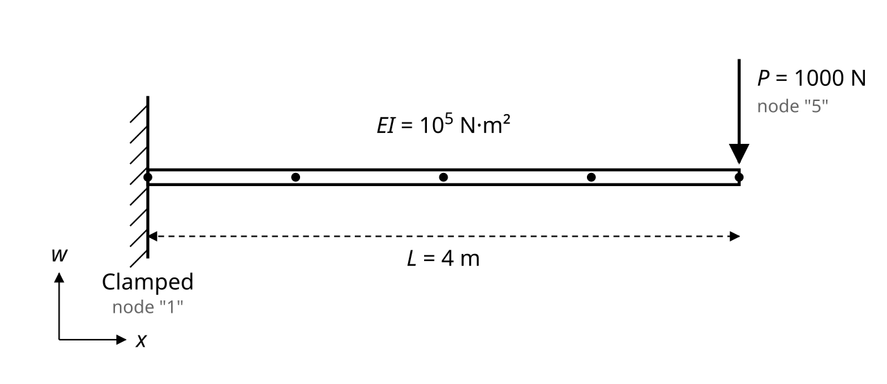

Overview
Cantilever Beam Under a Tip Load Tutorial
In this tutorial, we solve the classical cantilever beam problem using the Euler-Bernoulli beam theory: a beam clamped at one end and free at the other, carrying a concentrated load at the free (tip) end. This is one of the most fundamental problems in structural mechanics, and it has a well-known closed-form analytical solution that we use here to verify the FEAScript finite element result.
The Euler-Bernoulli beam theory describes the bending of slender beams under transverse loading. The governing equation for the transverse deflection \(w(x)\) is the fourth-order equation:
\(\frac{d^2}{dx^2}\left(EI(x)\frac{d^2w}{dx^2}\right) = q(x)\)
Where \(EI(x)\) is the bending stiffness (product of the Young's modulus and the second moment of area of the cross-section) and \(q(x)\) is the distributed transverse load. In this example, we consider a cantilever beam of length \(L = 4\ \text{m}\) and constant bending stiffness \(EI = 1.0\times10^5\), clamped at \(x=0\) (\(w(0) = 0\) and \(\theta(0) = dw/dx|_{x=0} = 0\)) and free at \(x=L\), where a concentrated tip load \(P = -1000\) is applied. Since there is no distributed load along the span (\(q(x) = 0\)), the beam bends solely due to the point load applied at its free end.

Schematic of the cantilever beam: clamped support at x=0 (w=0, θ=0) and a downward tip point load P at x=L
For this problem, the deflection admits the classical closed-form analytical solution:
\(w(x) = \frac{P}{6EI}\left(3Lx^2 - x^3\right)\)
with the corresponding rotation:
\(\theta(x) = \frac{dw}{dx} = \frac{P}{2EI}\left(2Lx - x^2\right)\)
giving a maximum tip deflection \(w(L) = PL^3/(3EI)\) and tip rotation \(\theta(L) = PL^2/(2EI)\). We use this analytical solution below to verify the finite element result computed by FEAScript.1
Since the governing equation is fourth-order, both the deflection \(w\) and the rotation \(\theta\) must be continuous across element boundaries. FEAScript uses cubic Hermite shape functions for the beam field, so each node carries 2 degrees of freedom, ordered as \([w_0, \theta_0, w_1, \theta_1, \ldots]\) in the solution vector. Because the analytical solution itself is a cubic polynomial in \(x\), cubic Hermite elements represent it exactly, even on a coarse mesh.
Below is a demonstration of how to use the FEAScript library to solve this cantilever beam problem in your web browser. You only need a simple HTML page to run this example where the following code snippets should be included. First, load the required external libraries:
<head> <!-- ...head region... --> <script src="https://cdnjs.cloudflare.com/ajax/libs/plotly.js/2.35.3/plotly.min.js"></script> <!-- ...rest of head region... --> </head>
We should then define the problem parameters, such as the solver type, the mesh configuration, and the boundary conditions. This is performed using JavaScript objects directly in the HTML file:
<body>
<!-- ...body region... -->
<script type="module">
// Import FEAScript library
import { FEAScriptModel, printVersion } from "https://core.feascript.com/dist/feascript.esm.js";
window.addEventListener("DOMContentLoaded", (event) => {
// Print FEAScript version in the console
printVersion();
// Beam and load parameters
const beamLength = 4; // m
const bendingStiffness = 1.0e5; // EI
const tipLoad = -1000; // Downward point load at the free end
// Create and configure model
const model = new FEAScriptModel();
model.setModelConfig("eulerBernoulliBeamScript", {
coefficientFunctions: {
EI: (x) => bendingStiffness,
},
});
// Define mesh configuration
model.setMeshConfig({
meshDimension: "1D",
elementOrder: "linear",
numElementsX: 4,
maxX: beamLength,
});
// Define boundary conditions
model.addBoundaryCondition("1", [["fixed"]]); // Clamped support at x=0
model.addBoundaryCondition("5", [["force", tipLoad]]); // Tip point load at x=L (last node)
// Solve
model.setSolverMethod("lusolve");
const result = model.solve();
// Extract the deflection field from the solution vector
// DOF layout per node: [w, theta]
const totalNodesX = model._eulerBernoulliBeamMetadata.totalNodesX;
const solutionVector = result.solutionVector;
const femDeflection = Array.from({ length: totalNodesX }, (_, i) => solutionVector[2 * i]);
const femNodesX = result.nodesCoordinates.nodesXCoordinates;
});
</script>
<!-- ...rest of body region... -->
</body>
In the boundary condition definition, the numbers at the left side ("1" and
"5") refer to the 1-based global node number, since the tip point load is applied
directly at the last node of the beam mesh (node 5, at \(x=L\), for a 4-element mesh). The
clamped support at node 1 fixes both the deflection and the rotation (\(w=0\), \(\theta=0\)).
Since the beam solver packs \(w\) and \(\theta\) together at each node, the deflection field is extracted from the solution vector by taking every other entry.
Below is the 1D line plot comparing the FEAScript finite element solution with the closed-form analytical solution \(w(x) = \frac{P}{6EI}\left(3Lx^2 - x^3\right)\). This plot is generated in real time using FEAScript.
The FEAScript nodal values coincide with the analytical curve, since cubic Hermite elements represent the exact cubic deflection shape of this problem, even with a coarse mesh. The tip deflection is \(w(L) = PL^3/(3EI)\).
1J.M. Gere and B.J. Goodno, Mechanics of Materials, 8th ed., Cengage Learning, 2012.